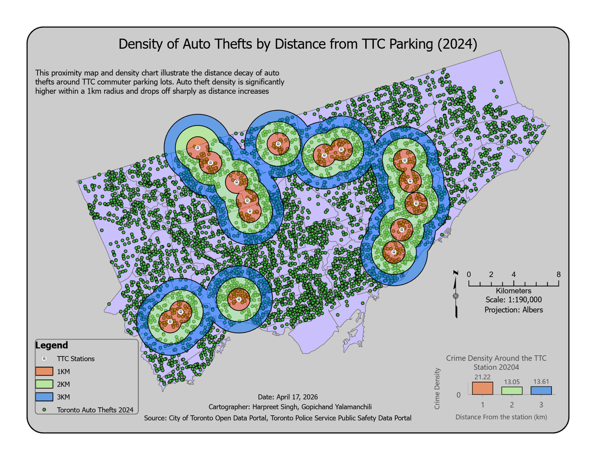

Spatial Analysis of Auto Theft in Toronto (2024): Neighbourhood Hotspots & TTC Commuter Parking Proximity
Empirical hotspot clustering across 158 Toronto neighbourhoods and area-normalized distance-decay modeling around TTC commuter parking lots. Co-authored with Gopichand Yalamanchili (SAIT BGIS, April 2026).
2024 Auto Theft Surge
Identify statistically significant theft clusters across 158 neighbourhoods and test proximity to TTC commuter lots.
Equal-Area & Geocoding
Custom Toronto Albers projection (1/6 rule), clipped 2024 TPS records, and geocoded TTC commuter lots.
Gi* & Ring Buffers
Getis-Ord Gi* (4,000 m fixed band) plus non-overlapping 1/2/3 km buffers normalized by ring area (thefts/km²).
Quantified Decay
99% hotspot in West Humber-Clairville and 21.22 thefts/km² within 0–1 km of TTC lots (~40% drop beyond 1 km).
1. Operational Problem
Auto theft surged across Toronto in 2024, requiring statistical identification of high-risk clusters across all 158 official city neighbourhoods and an empirical test of whether proximity to TTC commuter parking lots drives higher theft concentration. Raw incident counts alone risk misleading conclusions without distortion-free area normalization and formal spatial autocorrelation testing.
2. Data & Spatial Pipeline
-
Incident & Boundary Ingestion: Ingested 2024 auto
theft point records from the Toronto Police Service Public Safety Data
Portal (
Select By Attributesfor 2024, clipped to Toronto municipal boundaries) and 158 official neighbourhood polygons from the City of Toronto Open Data Portal. -
Commuter Lot Geocoding: Geocoded TTC commuter parking lot
locations from official station addresses into a point feature class via
XY Table To Point. - Custom Equal-Area Projection: Designed a custom Toronto Albers Equal Area Conic (NAD83) projection using the 1/6 rule to guarantee distortion-free area (km²) calculations across the municipal extent.
-
Hotspot Clustering: Executed a neighbourhood
Spatial Joinfollowed by Getis-Ord Gi* Hot Spot Analysis using a 4,000 m fixed distance band. - Area-Normalized Proximity Buffers: Generated non-overlapping 1 km, 2 km, and 3 km Multiple Ring Buffers around TTC commuter lots and normalized incident counts by ring area (thefts/km²) to eliminate outer-ring area bias.
3. Quantified Findings & Key Metrics
Right-Skewed Concentration
Across 158 neighbourhoods, 114 recorded 2–65 incidents while extreme western outliers reached 251–650 stolen vehicles.
99% Confidence Hotspot
Confirmed a statistically significant hotspot cluster (p < 0.01) in West Humber-Clairville and a secondary 90–95% cluster in the northeast, contrasted against a 99% cold spot in the downtown core.
21.22 thefts/km² Peak
Density peaks at 21.22 thefts/km² within 0–1 km of TTC commuter lots, dropping nearly 40% to 13.05 (1–2 km) and 13.61 (2–3 km).
4. Cartographic Deliverables Gallery
Production layouts exported from ArcGIS Pro in the custom Toronto Albers Equal Area Conic projection:


Full 12-page technical report available upon request.